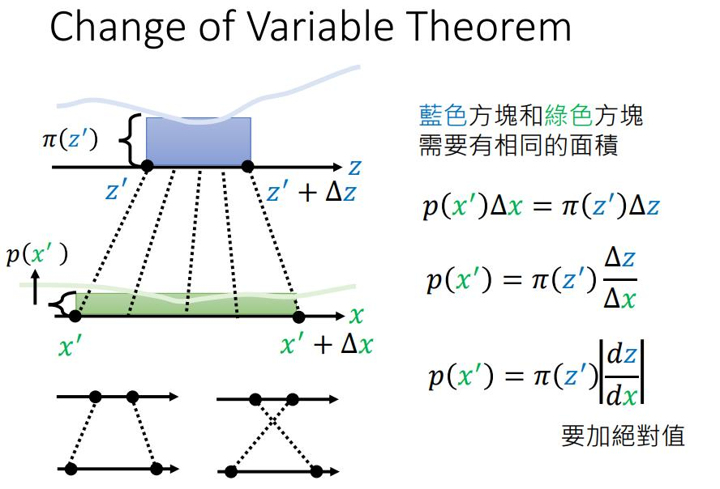
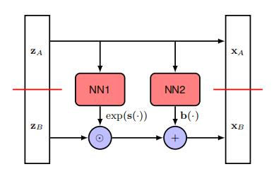
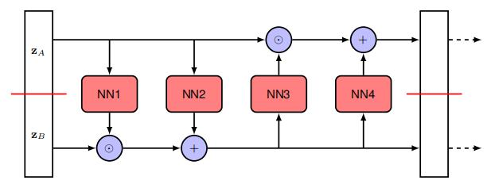
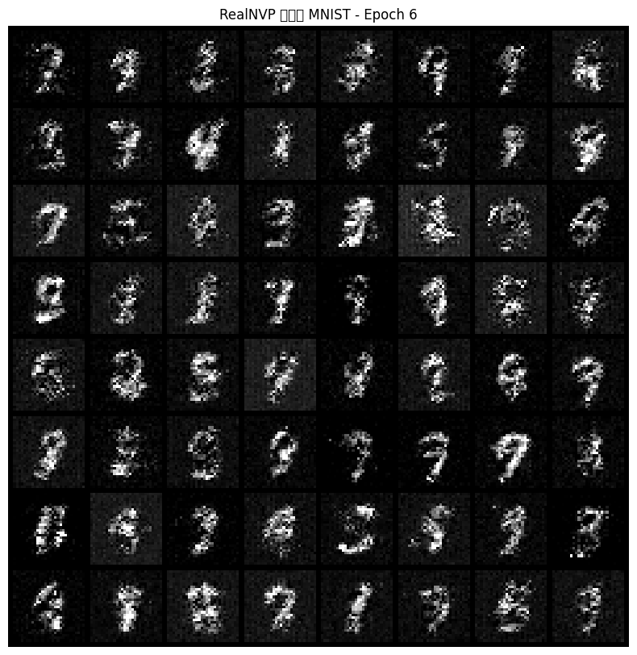
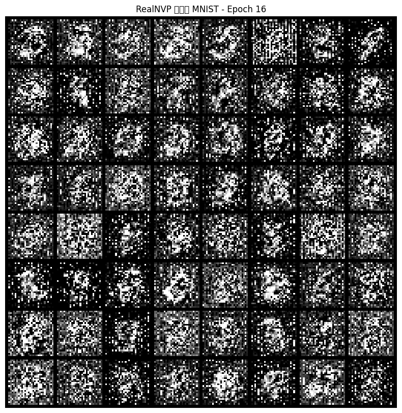
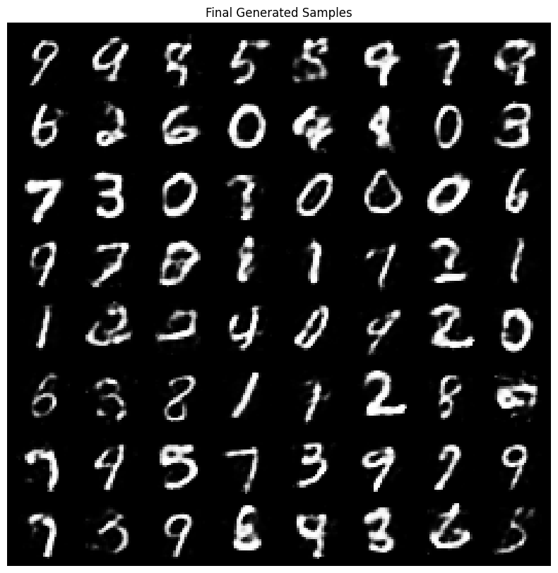
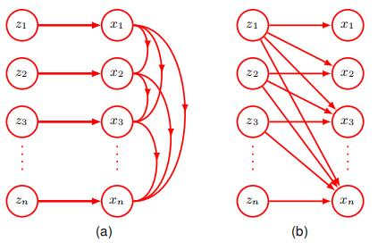

流模型与流匹配
流模型与流匹配介绍。
归一化流（Normalizing Flow）
先导
我们首先会定义了一个分布 $p _ {z}(z)$,有时也称为基础分布，以及一个由深度神经网络给出的非线性函数 $x=f(z,w)$，该函数将潜在空间（latent space）转换为数据空间。
$p _ {z}(z)$ 会尽可能简单,例如高斯分布，以便从这种模型中进行采样。
为了衡量分布的相似度，$g^\ast =argmax\sum logP(x)\approx argmin (KL(P _ {data}||P_G))$，我们需要计算此模型的似然函数,我们需要数据空间分布，这取决于神经网络的逆函数。
我们将其写为 $z=g(x,w)$，它满足 $z=g(f(z,w),w)$。即对于w的每个值,函数 $f(z,w)$ 和 $g(x,w)$ 是可逆的。
然后我们可以使用变量变换公式（change of variable theorem）来计算数据密度:
$$
p _ {x}(x|w)=p _ {z}(g(x,w))|det J(x)|
$$
其中 $J(x)$ 是雅可比矩阵，$J _ {ij}(x)=\frac{\partial g _ {i}(x,w)}{\partial x _ {j}}$ 。

然而，要求可逆映射的一个后果是，隐式空间的维度必须与数据空间的维度相同，这可能导致高维数据(如图像，动辄就是几百乘几百的维度)的大型模型的复杂性增加。比如计算 $D\times D$ 矩阵的行列式的成本是 $\mathcal{O}(D^{3})$。
所以，我们希望对模型施加一些进一步的限制,以便更有效地计算雅可比矩阵行列式。
如果我们考虑一个独立数据点训练集 $\mathcal{D}={x _ {1},…,x _ {N}}$，则：
$$
\begin{align}
ln~p(\mathcal{D}|w)&=\sum _ {n=1}^{N}ln~p _ {x}(x _ {n}|w)
\\
&=\sum _ {n=1}^{N}{ln~p _ {z}(g(x _ {n},w))+ln|det~J(x _ {n})|}
\end{align}
$$
并且我们的目标是通过似然函数来训练神经网络。为了能够模拟各种分布,我们希望转换函数 $x=f(z,w)$ 具有高度的灵活性,因此我们使用深度 神经网络架构。如果我们使网络中的每一层都是可逆的,那么我们可以确保整个函数是可逆的。为了看到这一点,考虑三个连续的变换,每个变换对应网络的一层,形式如下:
$$
x=f^{A}(f^{B}(f^{C}(z)))
$$
那么逆函数由下式给出：
$$
z=g^{C}(g^{B}(g^{A}(x)))
$$
对于雅克比矩阵也可以使用链式法则化为各个层的乘积。
这种建模分布的方法称为归一化流（Normalizing Flow）。流，是因为通过一系列映射转换概率分布的过程与流体的流动有些类似。归一化，是因为逆映射的效果是将复杂的数据分布转换为归一化形式,通常是高斯或正态分布。
耦合流（Coupling Flows）
我们的目标是为单个可逆函数层,以便我们可以将许多层组合在一起来定义一个高度灵活的可逆函数类。
首先考虑一个形式为$x=az+b$，它很容易求逆,得到 $z=\frac{1}{a}(x-b)$ 。
但是，线性变换在复合下是封闭的——一系列线性变换等效于一个整体线性变换。此外,高斯分布的线性变换仍然是高斯分布。因此,即使我们有许多这样的“层”线性变换,我们也只会得到一个高斯分布。
问题是，我们能否在保持线性变换可逆性的同时,允许额外的灵活性,以便结果分布是非高斯的呢？
这个问题的一个解决方案是由一种称为RealNVP[1] 的归一化流模型给出,它是“real-valued non-volume preserving”的缩写。
想法是将潜在变量向量z分成两部分 $z=(z _ {A},z _ {B})$,使得如果z的维度是 $D _ {i}$ 而 $Z _ {A}$ 的维度是d,那么 $z _ {B}$ 的维度是 $D-d _ {n}$ 。
我们同样将输出向量 $x=(x _ {A},x _ {B})$ 划分,其中 $x _ {A}$ 的维度为d。
而对于输出向量的第一部分,我们简单地复制输入: $x _ {A}=z _ {A}$ ，$x _ {B}$ 的维度为 $D-d _ {\circ}$
向量的第二部分经过线性变换,但现在线性变换中的系数由 $Z _ {A}$ 的非线性函数给出：
$$x _ {B}=exp(s(z _ {A},w))\odot z _ {B}+b(z _ {A},w)$$
其中 $s(z _ {A},w)$ 和 $b(z _ {A},w)$ 是神经网络的实值输出,指数函数确保乘法项为非负。这里表示涉及两个向量逐元素乘法的Hadamard积。
由于使用了神经网络函数, $x$ 的值可以是非常灵活的函数。
整体变换也很容易可逆：给定一个 $x=$ 的值 $(x _ {A},x _ {B})$,我们首先计算$z _ {A}=x _ {A}$ ，然后有$z _ {B}=exp(-s(z _ {A},w))\odot(x _ {B}-b(z _ {A},w))$。

值得注意的是， $S(Z;w)$ 和 $b(z;w)$ 无需可逆。
现在考虑雅可比矩阵及其行列式。我们可以将雅可比矩阵分成块,对应于z和x的划分,得到:
$$
J=\begin{bmatrix}\frac{\partial z_A}{\partial x_A}&\frac{\partial z_A}{\partial x_B}\\ \frac{\partial z_B}{\partial x_A}&\frac{\partial z_B}{\partial x_B}\end{bmatrix}=\begin{bmatrix}I _ {d}&0\\ \frac{\partial z _ {B}}{\partial x _ {A}}&diag(exp(-s))\end{bmatrix}
$$
我们不在乎左下角的值，因为它是一个下三角矩阵，行列式直接是主对角线元素的乘积。因此,雅可比行列式简单地由 $exp(-s(z _ {A},w))$ 的元素乘积给出。
这种方法的一个明显限制是 $z _ {A}$ 的值不受变换的影响。这很容易通过添加另一层来解决,在该层中 $z _ {A}$ 和 $z _ {B}$ 的角色被反转。然后可以重复这种双层结构多次。

整体训练过程涉及创建数据点的mini-batches。对于形式为 $\mathcal{N}(z|0,I)$ 的潜在分布,对数密度简单地是 $-||z||^{2}/2$,仅差一个加性常数。
$$
\ln(\frac{1}{\sqrt{2\pi}}\exp(-\frac{z^2}{2}))=\ln(\frac{1}{\sqrt{2\pi}})+\frac{-||z||^2}{2}
$$
另外，Real NVP模型中会使用BatchNorm，这也会使得多一些变换行列式。
RealNVP 模型属于一类称为耦合流（Coupling Flows）的正则化流,其中线性变换$x _ {B}=exp(s(z _ {A},w))\odot z _ {B}+b(z _ {A},w)$被更一般的形式$x _ {B}=h(z _ {B},g(z _ {A},w))$ 所替代。
其中 $h(z _ {B}g)$ 是一个关于 $z _ {B}$ 的函数，对于任何给定的g值都是可逆的,称为耦合函数。函数 $g(z _ {A},w)$ 称为条件器（conditioner）,通常由神经网络表示。
笔者也动手实现了realnvp的代码：
1 | |
值得注意的是，图像是离散数据，而Realnvp是离散数据，我们需要做一些处理才可能成功运行。
一个最简单的方法是使用autoencoder，并用潜在向量来训练realnvp。
另一个方法是反量化（Dequantization）。一个最简单的反量化是对每个离散值添加一个范围在$ [0, 1)$之间的随机噪声，并将其映射为0~1之间，比如使用sigmoid等。
另一种做法是变分反量化，在flow++[2]中提出，即将去量化过程本身也变成了一个需要学习和优化的模型。
1 | |
处理前： 可以发现训练不一定能成功，有时会坍塌。


处理后：

自回归流（Autoregressive Flows）
一个与正则化流相关的公式可以从注意到一组变量的联合分布总是可以表示为每个变量的条件分布的乘积来推导。我们可以不失一般性地写出：
$$p(x _ {1},…,x _ {D})=\prod _ {i=1}^{D}p(x _ {i}|x _ {1:i-1})$$
其中 $x _ {1:i-1}$ 表示 $x _ {1},…,x _ {i-10}$ 这种分解可用于构建一类称为掩码式自回归流(masked autoregressive flow，MAF)的归一化流,其定义为：
$$x _ {i}=h(z _ {i},g _ {i}(x _ {1:i-1},w _ {i}))$$
这里 $h(z _ {i},\cdot)$ 是耦合函数,其被选择为相对于易于 $z _ {i}$ 求逆的,而g是条件器,通常由深度神经网络表示。掩码式指的是使用单个神经网络来实现上式以及一个二元掩码，该掩码强制网络权重的子集为零以实现自回归约束。

在这种情况下,用于评估似然函数的逆向计算需要给出：
$z _ {i}=h^{-1}(x _ {i},g _ {i}(x _ {1:i-1},w _ {i}))$
因为上式中用于评估的各个函数 $z _ {1},…,z _ {D}$ 可以并行评估，因此可以在现代硬件上高效执行。
与上式对应的雅可比矩阵的元素 $\partial z _ {i}/\partial x _ {j}$ 它们形成一个上三角矩阵,其行列式由对角元素的乘积给出,因此也可以高效评估。
然而,从这个模型中进行采样必须通过评估$x _ {i}=h(z _ {i},g _ {i}(x _ {1:i-1},w _ {i}))$来完成,这本质上是有序的，因此很慢。
为了避免这种低效的采样，可以定义一个逆自回归流（inverse autoregressive flows，IAF）给出 ：
$$x _ {i}=h(z _ {i},\tilde{g} _ {i}(z _ {1:i-1},w _ {i}))$$
现在采样就更快了。
然而，其逆函数也还是具有序列性。
$$z _ {i}=h^{-1}(x _ {i},\tilde{g} _ {i}(z _ {1:i-1},w _ {i}))$$
连续流（Continuous Flow）
神经微分方程（Neural differential equations）
深度网络具有很深的层数是很有用。
所以，我们可以探索神经网络达到无限层数的极限会发生什么。
考虑一个残差网络,其中每一层的处理生成的输出由输入向量与输入向量的某些参数化非线性函数相加给出:
$$z^{(t+1)}=z^{(t)}+f(z^{(t)},w)$$
其中 $t=1,…,T$ 标记网络中的层。
为了简便，我们在每一层都使用了相同的函数,并共享参数向量w。
在极限情况下,隐藏单元激活向量成为连续变量的函数 $z(t)$,我们可以将此向量在网络中的演变表示为一个微分方程:
$$\frac{dz(t)}{dt}=f(z(t),w)$$
中的公式被称为一个神经常微分方程或神经 ODE。
如果我们用向量 $z(0)$ 表示网络的输入,那么输出 $z(T)$ 是通过积分微分方程获得的：
$$z(T)=\int _ {0}^{T}f(z(t),w)dt$$
这个积分可以使用标准的数值积分包来评估。求解微分方程的最简单方法是欧拉前向积分方法,它对应于表达式$z^{(t+1)}=z^{(t)}+f(z^{(t)},w)$。
在实践中,更强大的数值积分算法可以自适应地调整它们的函数评估以实现。特别是,它们可以自适应地选择的值,这些值通常不是均匀分布的。
神经ODE反向传播
我们得到了神经ODE的形式，那么如何通过优化损失函数来确定w的值呢？假设我们有一个数据集,其中包含输入向量 $z(0)$ 的值,以及相关的输出目标向量和损失函数 $L(\cdot)$,该函数取决于输出向量 $z(T)$。
一种方法可能是使用自动微分来对ODE求解器在正向传递期间执行的所有操作进行微分。尽管这很直接,但从内存角度来看代价很高,并且在控制数值误差方面不是最优的。
相反,Chen等人[3]将ODE求解器视为一个黑盒,并使用一种称为伴随敏感性方法的技术,这可以看作是显式反向传播的连续类比。
为了将反向传播应用于神经ODE,我们定义一个称为伴随的量,其定义为 [cite: 21]
$$a(t)=\frac{dL}{dz(t)}$$
我们看到 $a(T)$ 对应于损失关于输出向量的常规导数。伴随子满足其自身的微分方程,该方程为：
$$\frac{da(t)}{dt}=-a(t)^{T}\nabla _ {z}f(z(t),w)$$
证明：
$$
\begin{align}
a(t)&=\frac{dL}{dz(t)}\\
a(t+\delta t)&\approx\frac{dL}{dz(t+\delta t)}\\
z(t+\delta t)&\approx z(t)+f(z(t),w)\delta t\\
\therefore \frac{\partial L}{\partial z(t)}&=\frac{\partial L}{\partial z(t+\delta t)}\frac{\partial z(t+\delta t)}{\partial z(t)}\\
a(t)&=a(t+\delta t)(I+\nabla_zf()\delta t)
\end{align}
$$
这是一个微积分链式法则的连续版本。这可以通过从 $a(T)$ 开始反向积分来求解,这同样可以使用黑盒ODE求解器来完成。
关于网络参数的导数。当一个参数值在网络的多个连接中共享时,总导数由每个连接的导数之和形成。
对于我们的神经ODE,其中相同的参数向量 w在整个网络中共享,这个求和变成了对的积分,其形式为：
$$\nabla _ {w}L=-\int _ {0}^{T}a(t)^{T}\nabla _ {w}f(z(t),w)dt$$
$\nabla _ {z}f$ 和 $\nabla _ {w}f$ 可以使用自动微分高效地计算。注意,上述结果同样适用于一个更通用的神经网络函数 $f(z(t),t,w)$ 它在除了通过 $z(t)$ 隐式依赖之外,还对有显式依赖。
使用伴随方法训练的神经ODE相比于传统层状网络的一个优点是,不需要存储前向传播的中间结果,因此内存成本是恒定的。
此外，神经 ODE可以自然地处理连续时间数据,其中观测值在任意时间发生。如果误差函数 L 取决于除输出值之外的 $z(t)$ 的值,那么需要多次运行反向模型求解器,每次运行对应一对连续的输出,以便将单个解分解为多个连续解,从而访问中间状态。
神经ODE flows
神经ODE定义了一种高度灵活的从输入向量 $z(0)$ 到输出向量 $z(T)$ 的变换,该变换以微分方程的形式给出：
$$\frac{dz(t)}{dt}=f(z(t),w)$$
如果我们定义一个关于输入向量 $p(z(0))$ 的基础分布,那么神经ODE 会将其随时间向前传播,为每个的值给出一个分布 $p(z(t))$,从而得到一个关于输出向量 $p(z(T))$ 的分布。
Chen[3]表明,对于神经ODE,密度的变换可以通过积分一个由下式给出的微分方程来评估：
$$\frac{d~lnp(z(t))}{dt}=-Tr(\frac{\partial f}{\partial z(t)})$$
其中 $\partial f/\partial z$ 表示雅可比矩阵,其元素为 $\partial f _ {i}/\partial z _ {jc}$。
作者使用的是泰勒级数展开式等来证明。
我们也可以进一步展开到。
这个积分可以使用标准的ODE 求解器来执行。同样,可以从基础密度 $p(z(0))$ 中采样,该分布被选择为一个简单的分布,例如高斯分布,并通过再次使用ODE 求解器积分将值传播到输出。
由此产生的框架被称为一个连续归一化流。连续归一化流可以使用用于神经ODE的伴随敏感性方法进行训练,这可以看作是反向传播的连续时间等价物。
由于涉及雅可比矩阵的迹而不是使用行列式，因此它可能看起来在计算上更高效。
通常,计算一个 $D\times D$ 矩阵的行列式需要 $\mathcal{O}(D^{3})$ 次操作,而计算迹只需要 $\mathcal{O}(D)$ 次操作。
然而,如果行列式是下三角形的,如在许多归一化流的形式中,那么行列式是主对角线项的乘积,因此也涉及 $\mathcal{O}(D)$ 次操作。由于计算雅可比矩阵的各个元素需要单独的前向传播,而前向传播本身需要 $\mathcal{O}(D)$ 次操作,因此计算迹或行列式(对于下三角矩阵)总共需要 $\mathcal{O}(D^{2})$ 次操作。
然而,通过使用 Hutchinson 的迹估计器(Grathwohl et al., 2018),可以将计算迹的成本降低到 $\mathcal{O}(D),$
该估计器对于一个矩阵A采用以下形式
$$Tr(A)=\mathbb{E} _ {\epsilon}[\epsilon^{T}A\epsilon]$$
其中是一个均值为零、协方差为一的随机向量,例如,高斯 $\mathcal{N}(0,I)$。对于特定的,矩阵-向量积A∈可以使用反向自动微分在一次遍历中高效地计算。然后我们可以使用有限数量的样本来近似迹,形式为：
$$Tr(A)\simeq\frac{1}{M}\sum _ {m=1}^{M}\epsilon _ {m}^{T}A\epsilon _ {m}$$
参考资料
本文参考了多篇公开资料（博客、代码等等）[96][97]和一些教科书[98]和李宏毅的课程[99]。
- Laurent Dinh, Jascha Sohl-Dickstein, Samy Bengio.Density estimation using Real NVP ↩
- Ho, J., Chen, X., Srinivas, A., Duan, Y., and Abbeel. Flow++: Improving Flow-Based Generative Models with Variational Dequantization and Architecture Design ↩
- Ricky T. Q. Chen.Neural Ordinary Differential Equations ↩
- A Visual Dive into Conditional Flow Matching.https://dl.heeere.com/conditional-flow-matching/blog/conditional-flow-matching/#d-footnote-9 ↩
- Deep Learning Course at the University of Amsterdam (MSc AI), Fall 2023.https://github.com/phlippe/uvadlc_notebooks ↩
- PRML ↩
- 李宏毅的flow base model课程 ↩